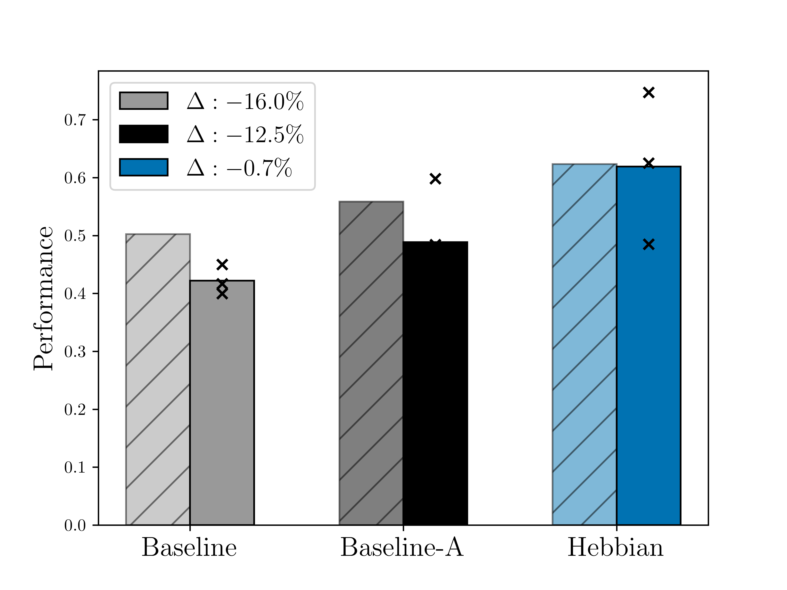

This page was built using the Academic Project Page Template which was adopted from the Nerfies project page.
In this paper, we introduce Hebbian learning as a novel method for swarm robotics, enabling the automatic emergence of heterogeneity. Hebbian learning presents a biologically inspired form of neural adaptation that solely relies on local information. By doing so, we resolve several major challenges for learning heterogeneous control: 1) Hebbian learning removes the complexity of attributing emergent phenomena to single agents via local updates, thus circumventing the micro-macro problem; 2) uniform Hebbian learning rules across all swarm members limit the number of parameters needed, mitigating the curse of dimensionality with scaling swarm sizes; and 3) evolving Hebbian learning rules based on swarm-level behaviour minimises the need for extensive prior knowledge typically required for optimising heterogeneous swarms. This work demonstrates that with Hebbian learning heterogeneity indeed naturally emerges, resulting in swarm-level behavioural switching and significantly improving the capability of the swarm.

@article{van2025hebbianswarm,
title={Emergent Heterogeneous Swarm Control Through Hebbian Learning},
author={van Diggelen, Fuda and Karag{\"u}zel, Tugay Alperen and Rincon, Andres Garcia and Eiben, A.E. and Floreano, Dario and Ferrante, Eliseo},
journal={arXiv preprint arXiv:2507.11566},
doi={"10.48550/arXiv.2507.11566"},
year={2025},
}
This page was built using the Academic Project Page Template which was adopted from the Nerfies project page.